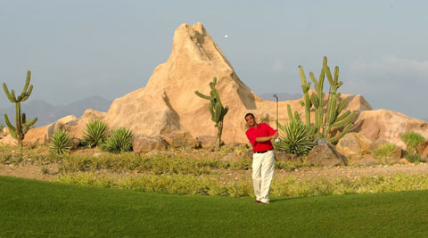
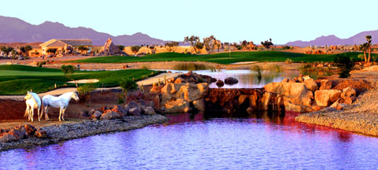
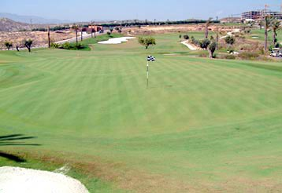
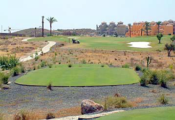

Holiday Let/Long Term
If you fancy a holiday at our place in Palomares visit our listed property on TripAdvisorWe have a two bed, 2 bathroom apartment with underground parking in the south of Spain in Palomares, Almeria. With easyjet flying to Almeria and Mercia both only an hours drive away we'd be delighted for you stay. Construction finished in November 2006 and now recently furnished the property using www.homefromhomespain.com. Everything has been provided so all you need to bring are your good selves, clothes, swimmers, golf clubs (if you play!) and a car to get around. Check out the links below which tell you about the area, pictures of the property in construction and which property sites it's advertised on:
Property Development Photos
Phase I: Construction


Phase II: Furnishing


Phase III: Front yard cleanup


Desert Springs
Location:- Almeria
Course Designer: Peter McEvoy
6173 yards, par 72
URL: here
Desert Springs is Europe’s first desert golf course, and those lucky enough to play will agree that it is a truly wonderful experience.
The Desert Springs Indiana course has been built to the full USGA specifications, and has the quality standards of the now famous desert courses of Arizona and California. There are superb views of the mountains around, and the desert terrain provides a totally different aspect to golf in this part of Spain.
It was opened in 2002, and is a perfect choice for your golf holiday in Spain. There is already a new resort course planned within the next few years and along with the superb DESERT SPRINGS RESORT can become the number one resort in Spain.
The golf course is maintained in peak condition by an innovative water recycling system, along with the streams that run through the course, a residual water treatment plant and water from the nearby reservoir. There are over 1 million imported plants from as far as the USA. Overall there are 12 staff just taking care of the environment alone.
The different tees, the strategically situated bunkers and the carefully placed hazards make the Desert Springs course one of the most challenging golf courses in Spain. There are different grasses for the Fairways, Tees and Greens and all these can be grown on site. Even the practice area is lush with perfect grass.
The fairways are wide and each hole is different, making each round here an authentic pleasure. Dry riverbeds, streams, water channels, rocks and a wide variety of cactus plants add to the attraction on a course that is suitable for amateurs and professionals alike, especially when big competitions take place here. The contrast between the areas of play and the rough is especially spectacular.
There are excellent training facilities including an ‘A Star’ video training lounge, and top quality teaching staff.
Desert Springs Golf course can also boast some of the best customer service in Spain. The welcome and treatment you receive from all the staff make this course the most enjoyable experience.
The quality of The Desert Springs was proven when both the English Golf Union, and the Welsh Ladies Golf Union chose it as their “Spanish Home”. The Royal Spanish Golf Federation selected Desert Springs to host the Spanish Amateur Open in March 2004.


Valle Del Este Golf Course
Location:- Vera Almeria, Andalusia
5717 meters: Designer, Jose Canales
URL: here
The Valle del Este golf course has been carefully designed to combine holes that represent a real challenge to the player, with other less strenuous holes.
Valle del Este Golf course is only a few years old, but has already established itself as one of the finest course in the region. Nestled next to the superb Valle del Este Golf Resort Hotel this creates a superb location for your golf holiday in Spain.
Although predominantly a resort course, it is not spoiled by the urban development. In fact the architecture of the resort, typically Spanish, is very well designed and the colours in particular are eye pleasing.
This desert region of Spain is blessed with warm temperatures all year round, and this unique course is maintained in immaculate condition at all times. The Valle del Este’s design and setting make it picturesque and spectacular.
Almost every hole has tee boxes that are generally elevated, the view of each hole is clear and spectacular. The fairways are wide and generous where the drive should land, and bunkers pretty vast and clearly located to defend large and differently contoured greens.
In the Valle del Este golf course from the first tee box to the incredible eighteenth green, you will play the most amazing variety of golf holes you could ever come across on one course. Water features on many of the holes especially the 3rd, 5th and 18th.
Valle del Este is a fantastic course to play during your golf holiday in Spain.


Marina Golf Course
5272 meters: Designer, Ramon Espinosa
Location:- Mojacar, Almeria
URL: here
This new golf course first built in 2000 opened up the eastern Almeria region to Andalucia’s ongoing golf/tourism boom. A few teething problems in its first year Marina Golf closed for a short period but was in full operating order by 2003.
Marina golf club is sited within the Marina de la Torre estate, overlooking the sea at the foot of the hills from which the whitewashed Moorish town of Mojacar dominates the surrounded area.
There are two hotels here, the Marina Mar and the Marina Playa, both are within a short 7 iron of the club house and the convience of this golf course cannot be ignored.
With over 5,000 hours of sun per year, and an annual average temperature of 24 degrees you can expect to hear a lot more about this exciting undiscovered golf region.
The Marina Golf Course has two distinct halves! The first 3 holes are on a plateau overlooking the sea with spectacular views. You are then treated to one of the most spectacular golf holes in Spain, the Par five 4th hole, as you climb the rocks you are left to play another 10 holes in a truly peaceful valley. Its then back to the beach view plateau for the remaining holes.
Marina Golf Club are currently constructing a five star hotel by the second hole. Once this is complete the course will change its layout, and plans are already in place to invest another €1.5 million into the golf course. This will bring it up along side its new neighbours, Desert Springs and Valle del Este.
Cortijo Grande Golf Course
The current 9-hole golf course with its majestic backdrop of orange groves, almond, fig and olive trees is truly breathtaking. Watered from an underground volcanic lake, the valley has been an agricultural paradise for several centuries.
Cuisine
This area of is one of the best places in Andalusia for tapas. A myriad of bars offer you a variety of tapas to go along with your beer, or with the full-bodied wines produced in this region. In the neighbourhoods of Pescadería and El Alquián, both in Almería and in Cape Gata, fish tapas are very popular, while in the city centre it is more common to find hot tapas like different types of casseroles, patatas pobres or pauper's potatoes (sliced and fried with onions). In the province of Almería there is a varied spoon cuisine, which may seem more typical of Spanish inland areas than of a coastal city to the visitor. Soups and stews are typical, like the Almería-style soup (seafood soup), Almería-style garlic soup, fritada from Suflí (which is a kind of tomato sauce), Moorish soup, black soup and pimentón or red soup (a kind of fish casserole). Other great dishes are the fennel and wheat stew called olla de trigo and the renowned gurullos, a country dish that consists of small flour balls, fried in lard and flavoured with garlic, spicy sausage, bacon, game meat, etc.
This area is also famous for its Paella.
Property Advertisments
Angel Property are my rental agents and currently have our property listed for short or long term rental, please have a look. The property is also advertised on other websites which I will add links to shortly.http://www.angelproperty.net/rentals.php?prop_id=221
Contact